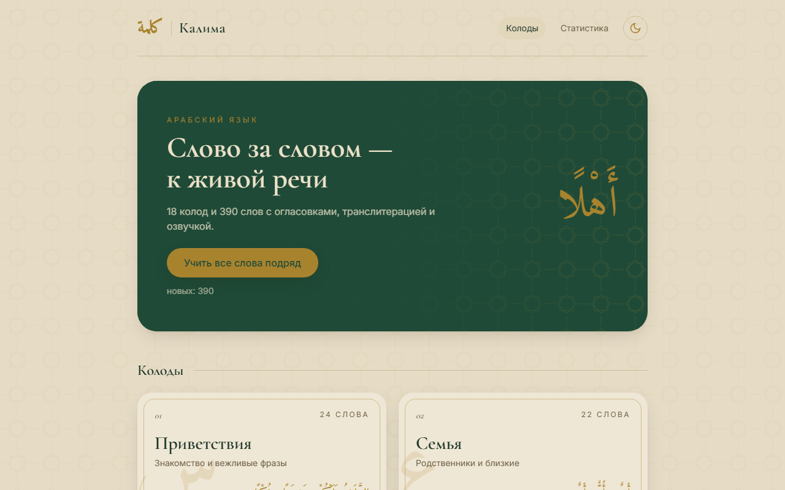

Веб-разработка
Лендинги и веб-приложения: React, PWA
Добро пожаловать.Давайте сделаем что-то вместе
Веб-разработка, автоматизация & короткие видео.
Лендинги и веб-приложения: React, PWA
Make.com: заявки, таблицы, письма, Telegram
Монтаж Reels, Shorts и TikTok, субтитры
// 02
// готовые проекты, текущая работа и то, что сейчас изучаю

Веб-приложение · октябрь 2026
Карточки для изучения арабской лексики. Приложение само планирует, какие слова пора повторить, чтобы они не забывались.
В работе · с октября 2026
Демо-проект тур-агентства по Кыргызстану. Задача — показать «бизнес в коробке»: сайт плюс автоматизация всей рутины агентства.
// что будет
// статус
// стек
$ изучаю --сейчас
$
Есть задача или идея? Напишите на почту или в мессенджер — обсудим, как её решить.
eltegin.zyrgalbek@gmail.com